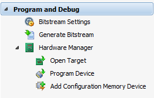

Program and Debug 環境は、Flow Navigator で [Hardware Manager] をクリックするか、[Tcl Console] ウィンドウで open_hw を実行すると開きます。Program and Debug 環境を作成するには、Open New Hardware Target ウィザードを使用してハードウェア サーバーとハードウェア ターゲットを接続する必要があります。
Program and Debug 環境が既に開いている場合は、Flow Navigator の [Program and Debug] をクリックするとアクティベートできます。
|
Program and Debug 環境からは、次が実行できます。
|
 |
関連項目
 |
Vivado デザイン ハブ - プログラムおよびデバッグ |
 |
Vivado Design Suite QuickTake ビデオ : Vivado のロジック デバッグ機能 |